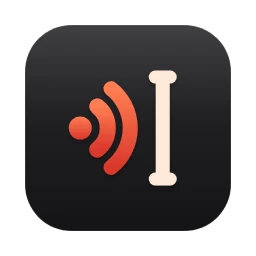

Terms
English inside Turkish
Ahmet'e Sılacık üzerinden yaz, Puhrıkı Esti'de bekliyor.
Ahmet'e Slack üzerinden yaz, pull request'de bekliyor.
From your own vocabulary, with the Turkish suffix kept. It never writes a word you did not list.
Push-to-talk dictation for macOS
Hold ⌥ and watch a Turkish dictation: what Whisper hears, then what yaz writes.
yaz turns your speech into text at the cursor, in any app, in Turkish, English, German, Spanish or French. Terms spelled right, numbers as digits, code in your editor, and it learns from every fix. Whisper runs on your Mac; nothing is uploaded.
01 — Why
Whisper hears you well. What comes out wrong is everything around it: the English terms, the numbers, the names on your screen. yaz fixes those as you speak, in five languages, and learns from every fix you make.
02 — What it fixes
Terms
Ahmet'e Sılacık üzerinden yaz, Puhrıkı Esti'de bekliyor.
Ahmet'e Slack üzerinden yaz, pull request'de bekliyor.
From your own vocabulary, with the Turkish suffix kept. It never writes a word you did not list.
Numbers
saat on beş otuzda, yüzde elli
saat 15.30'da, %50
Onu, altında, yedi only look like numbers. They stay words.
Code
camel case user name, auth service dosyası
userName, @Sources/AuthService.swift dosyası
Your project's names and files, in terminals, editors and coding agents only.
Commands
Geliyor musun soru işareti
Geliyor musun?
"Yeni satır" at the end of a sentence; "Yeni satır ekledim" stays a sentence. Say just geri al and the last dictation goes.
03 — Languages
Pick your main language and it gets everything: term repair, fillers, numbers, voice commands, learning. Each one is guarded by its own list of everyday words, measured on everyday sentences and on more that were held out. Turkish is where yaz started.
Turkish tr · reference
Sılacık'ta yaz, saat on beş otuzda
Slack'ta yaz, saat 15.30'da
English en
Cooper Netties served fifteen thousand requests
Kubernetes served 15,000 requests
German de
Kommst du um fünfzehn Uhr dreißig Fragezeichen
Kommst du um 15:30 Uhr?
Spanish es
vienes a las cinco signo de interrogación
¿Vienes a las cinco?
French fr
on a corrigé quatre-vingt-dix bugs
on a corrigé 90 bugs
Every other language Whisper speaks is transcribed as is: without a word list to guard it, a clean-up would protect nothing.
04 — Learns
A fix becomes a rule only if a fixed test set, and your own past dictations, stay correct. One number, keep or revert: the loop from Karpathy's autoresearch.
yaz follows the field for up to a minute while you edit, so a word you delete and retype counts, even if you press Return right after.
The words must sound alike and must not be everyday Turkish: changing your mind is not a mishearing.
Measured manglings, 522 checks on everyday sentences in five languages, and your own kept dictations. The rule stays only if the score does not rise.
Put back a word yaz changed, and that replacement is blocked at once.
05 — Agents
yaz mcp plugs yaz into Claude Code, Cursor or Codex. Hold the key and reply: your words go to the agent, not into its input box. No socket, no port; the agent starts yaz over stdio.
claude mcp add yaz -- \
/Applications/yaz.app/Contents/MacOS/yaz mcpM4 Pro, macOS 26.5, whisper large-v3-turbo on the Neural Engine. Every number comes from fixtures/ and yaz eval; run them yourself.
06 — And
Tap the key twice and keep talking hands-free; the next press stops.
The terms in the window you are looking at are spelled right for that dictation.
Per-app language, clean-up and a chat style that drops a lone full stop.
The words appear in the pill while you speak.
Every language Whisper speaks; five get the full clean-up.
yaz pastes, then puts your clipboard back as it was.
Pick one from the menu, or follow the system's.
Taps, silence and invented text are dropped before they reach you.

loading…
# checksum
shasum -a 256 ~/Downloads/yaz.dmg
# who signed it
spctl --assess --type execute --verbose /Applications/yaz.appDeveloper ID XMCHPUCJS2. Prefer the source? github.com/mikeowski/yaz builds with swift build.
07 — Questions
Your audio and your text, never. yaz downloads the speech model from Hugging Face on first use, the small voice-detector model if you turn it on, and checks yaz.mike4.dev for updates once a day. No account, no analytics.
When you press the key, the visible text of the front window, for a quarter of a second, to spell its names right; nothing is saved. After a paste, the field you dictated into, about once a second for up to a minute, to learn from your fixes. All through Accessibility, never password fields. "screen_context": false and "learn": false turn them off.
Accessibility lets yaz paste at your cursor; Input Monitoring lets it see the push-to-talk key. yaz doctor checks both.
macOS keeps the globe key when a second keyboard layout or Dictation is on. Set System Settings → Keyboard → "Press 🌐 key to" → Do Nothing, or choose right option in yaz's menu.
Transcription works in every language Whisper speaks. Turkish, English, German, Spanish and French also get term repair, filler removal, numbers, voice commands and language-model clean-up for your main language. Those layers are guarded by each language's list of everyday words; without one they would protect nothing, so other languages are transcribed as is.
Quit yaz from its menu and move it to the Trash. To remove everything, also delete ~/.config/yaz, ~/Library/Application Support/yaz and the model in ~/Documents/huggingface.